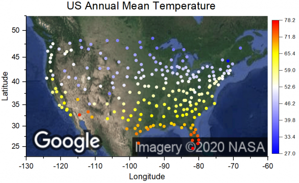

OriginグラフにGoogleマップを追加
Google-Map
概要
このチュートリアルは、Googleマップを背景としたグラフの作成操作を説明します。
- 
学習する項目
このチュートリアルでは、以下の項目について説明します。
- アプリセンターでGoogle Map Importアプリをダウンロードします。
- アプリを使ってGoogleマップをグラフに追加します。
ステップ
- 新しいワークブックを作成します。メニューからデータ：ファイルに接続： Text/CSVを選択します。接続するデータファイル、<Origin EXE Folder>\Samples\Graphing\US Mean Temperature.datを選択します。ダイアログが開いたらデフォルト設定のままOKをクリックします。
- B列をクリックして表示されるミニツールバーでXボタンをクリックします。これで列BがX属性になります。
- 列Cを選択し、メニューから作図：基本の2Dグラフ：散布図を選択して散布図を作成します。
- Originのワークスペース右側にあるアプリウィンドウのアプリの追加ボタンをクリックして、google mapを検索します。download アイコンをクリックしてダウンロードします。
- グラフウィンドウをアクティブにして、Google Map Importアプリをクリックして起動します。最初にSet From Active Graph Layerボタンをクリックして、プレビューウィンドウのフレームを米国エリアに再配置します。Map TypeをSatelliteに変更します。そして、Import as Updateボタンをクリックします。アクティブグラフの背景としてGoogleマップが追加されます。アプリを閉じます。

- シンボル上でクリックしてミニツールバーを開きます。シンボルのサイズを6に設定し、形状を塗りつぶし付きの円にします。シンボルの色をポイント毎にし、カラーマップをCol(P)"Annual"に設定します。ミニツールバーを使ってパレットをTemperatureに変更します。
- シンボルをクリックして、ミニツールバーでレベルの設定を選択します。開いたダイアログで副レベル数を10に変更します。
- グラフ上で円を滑らかに表示するには、Originワークスペースの右側にあるグラフツールバーのアンチエイリアシングの有効化/無効化ボタン
 をクリックします。
をクリックします。
- 凡例を削除します。左のツールバーにある色スケールの追加ボタンをクリックして、色スケールを追加します。
- 色スケール上で右クリックしてプロパティを選択します。左パネルでレベルを選択して、開始レベルを非表示にすると終了レベルを非表示にするにチェックを付けます。左パネルのラベルを選択して、自動のチェックを外し、カスタムフォーマットを*3に設定して、色スケールで有効数字3桁のみを表示するようにします。OKをクリックします。